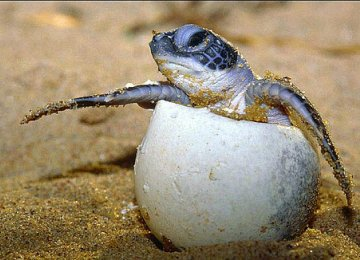

Blog

Beach Clean-ups
Beach cleanups are volunteer activities that take place on a regular basis along coastlines around the world. Environmental groups, civic organizations and individual beachgoers collect beach trash to make the beach a nicer...
Learn More
Why are Sea Turtles going extinct?
Nearly all species of sea turtle are classified as Endangered. Slaughtered for their eggs, meat, skin and shells, sea turtles suffer from poaching and over-exploitation. They also face habitat destruction and accidental capture in...
Learn More

Over-harvesting and Illegal Trade
Overharvesting and Illegal trade. Sea turtles continue to be harvested unsustainably both for human consumption and trade of their parts. Turtle meat and eggs are a source of food and income for many people around the world...
Learn More